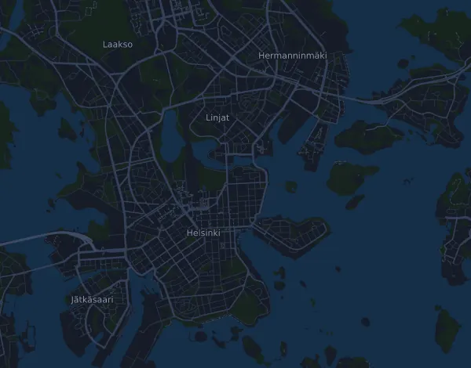

Björn Borg Helsinki Half Marathon 21,1 km
- Distanz
- 21,3 km
- Höhenmeter
- ↑ 332 m
- Höchster Punkt
- 49 m ü. M.
- Untergrund
- Straße
- Profil
- Hügelig
- Start
- 08:30 Uhr
- Verpflegungsstellen
- 5
Höhenprofil
Mit Mila vorbereiten
Mila ist eine Lauf-Coach-App. Nimmst du einen Lauf in deinen Plan auf, plant der Coach deine Wochen bis zum Start nach deiner Form und gibt dir eine Zielzeitprognose und einen Plan für Tempo, Getränke und Verpflegung auf der Strecke.

Der richtige Lauf am richtigen Tag.
Die Strecke

Über die Strecke
Björn Borg Helsinki Half Marathon 21,1 km ist ein Straßenlauf in Helsinki, Finnland, über 21,3 km. Die Strecke hat insgesamt 332 Höhenmeter bergauf und 333 bergab, 16 m pro km, und ist damit hügelig. Der höchste Punkt liegt auf 49 m ü. M., der tiefste auf 12 m.
Der größte Anstieg beginnt bei km 16,6: 27 Höhenmeter auf 720 m mit durchschnittlich 3,7 % Steigung, bis auf 48 m.
Der Veranstalter nennt 5 Verpflegungsstellen, die erste bei km 4,5 und die letzte bei km 18,0.
In der Mila-App beschreibt der Coach die Strecke ausführlich in deiner Sprache und plant dein Pacing und deine Verpflegung dafür.
Anstiege
| Beginnt bei | Länge | Höhenmeter | Steigung | Gipfel (m ü. M.) |
|---|---|---|---|---|
| km 16,6 | 720 m | 27 m | 3,7 % | 48 |
Vor dem Start
Verpflegungsstellen
| Bei | Angebot |
|---|---|
| km 4,5 | Wasser, Sportgetränk |
| km 8,0 | Wasser, Sportgetränk |
| km 11,5 | Wasser, Sportgetränk, Gels |
| km 15,0 | Wasser, Sportgetränk |
| km 18,0 | Wasser, Sportgetränk |
Startzeiten
- 08:30 Uhr
Quelle: helsinkihalfmarathon.fi, abgerufen am 15. Oktober 2026
Pace-Tabelle
Björn Borg Helsinki Half Marathon 21,1 km in 1:30:00 – Pace pro km und Zwischenzeiten
4:14 pro km · km 5: 21:08 · km 10: 42:15 · km 15: 1:03:23 · Ziel: 1:30:00
Björn Borg Helsinki Half Marathon 21,1 km in 1:45:00 – Pace pro km und Zwischenzeiten
4:56 pro km · km 5: 24:39 · km 10: 49:18 · km 15: 1:13:57 · Ziel: 1:45:00
Björn Borg Helsinki Half Marathon 21,1 km in 2:00:00 – Pace pro km und Zwischenzeiten
5:38 pro km · km 5: 28:10 · km 10: 56:20 · km 15: 1:24:30 · Ziel: 2:00:00
Björn Borg Helsinki Half Marathon 21,1 km in 2:15:00 – Pace pro km und Zwischenzeiten
6:20 pro km · km 5: 31:41 · km 10: 1:03:23 · km 15: 1:35:04 · Ziel: 2:15:00
Die Zeiten setzen ein gleichmäßiges Tempo auf der ganzen Strecke voraus. Das ist reine Rechnung, keine Prognose: an Anstiegen, im Gedränge und an Verpflegungsstellen schwankt das Tempo.
Häufige Fragen
Wann findet Björn Borg Helsinki Half Marathon 21,1 km statt?
Björn Borg Helsinki Half Marathon 21,1 km findet am Samstag, 12. Juni 2027 statt. Prüfe Datum und Startzeit beim Veranstalter.
Wann ist der Start bei Björn Borg Helsinki Half Marathon 21,1 km?
Laut Veranstalter: 08:30 Uhr.
Wie lang ist Björn Borg Helsinki Half Marathon 21,1 km und wie viele Höhenmeter hat die Strecke?
Der Lauf ist 21,3 km lang mit 332 Höhenmetern bergauf und 333 bergab. Der höchste Punkt liegt auf 49 m ü. M.
Wie ist die Strecke von Björn Borg Helsinki Half Marathon 21,1 km?
Die Strecke ist hügelig, mit durchschnittlich 16 Höhenmetern pro km. Sie hat einen Anstieg ab 25 Höhenmetern, bei km 16,6: 27 Höhenmeter auf 720 m. Start und Ziel liegen am selben Ort. Der Untergrund ist Straße.
Gibt es Verpflegungsstellen bei Björn Borg Helsinki Half Marathon 21,1 km?
Ja. Der Veranstalter nennt 5 Verpflegungsstellen: km 4,5 (Wasser, Sportgetränk); km 8,0 (Wasser, Sportgetränk); km 11,5 (Wasser, Sportgetränk, Gels); km 15,0 (Wasser, Sportgetränk); km 18,0 (Wasser, Sportgetränk).
Wie teile ich mir Björn Borg Helsinki Half Marathon 21,1 km ein?
Lauf eher mit gleichmäßiger Anstrengung als mit gleichmäßigem Tempo: Lass das Tempo an den Anstiegen sinken, hol es zurück, wo es flacher wird, und halte dich auf den ersten Kilometern zurück. Die größten Anstiege beginnen bei km 16,6. In Mila bekommst du einen Pace-Plan für genau diese Strecke, passend zu deiner Form.
Ähnliche Läufe
Weitere Läufe in der Nähe
- Helsinki City Marathon 42,2 km8. Mai 2027 · Helsinki, Finnland
- Pirkan Hölkkä 33 kmDatum offen · Valkeakoski, Finnland
- Vaarojen Maraton 43 kmDatum offen · Koli, Finnland
Mit Mila vorbereiten
Der richtige Lauf am richtigen Tag.
Die Angaben stammen aus der Streckendatei und den Informationen des Veranstalters. Prüfe Datum, Startzeiten und Regeln beim Veranstalter.
Mila ist nicht mit dem Veranstalter oder den Sponsoren des Laufs verbunden und wird von ihnen weder gesponsert noch empfohlen. Namen und Marken gehören ihren Inhabern. Veranstalter oder Rechteinhaber? Änderung oder Entfernung beantragen